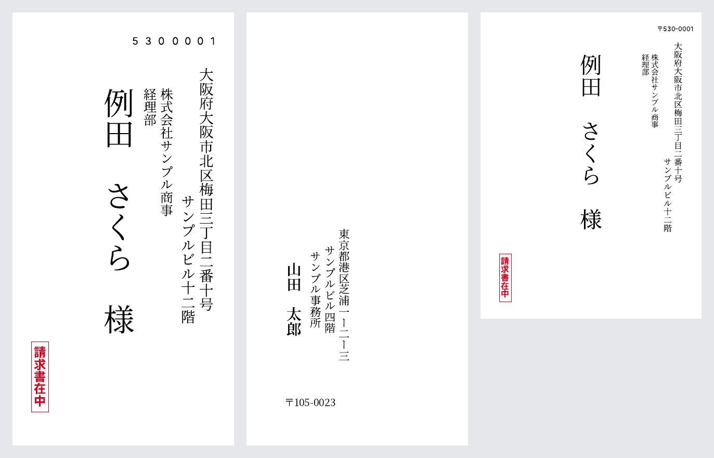

封筒の宛名印刷（縦書き）
請求書・見積書・案内状を送る封筒（長形3号・長形4号・角形2号）に、Excel や CSV の住所録から宛名を直接印刷するツールです。1通1枚、縦書きで、会社名・部署・「御中」「様」、左下の「請求書在中」、裏面の差出人まで印刷できます。ソフトのインストールは不要で、Mac でも Windows でも、いつものブラウザで動きます。
500円（税込・買い切り）
お試し版はすべての機能を使えて、印刷は表・裏とも先頭3通まで（枠つきの試し刷りは何度でも）。プリンターでの位置合わせまで、購入前に確かめられます。決済が終わると、そのまま製品版の画面に移動します。ブックマークしておけば何度でも使えます。

印刷結果の例（左から：長形3号の表、長形3号の裏、角形2号の表。角形2号は縮小）。住所・氏名・会社名は架空のものです。
こんなときに
- 毎月の請求書を封筒で送っていて、宛名を手書きしたり、ラベルを貼ったりしている
- Word の差し込み印刷で封筒の設定をするたびに、用紙の向きや位置でつまずく
- 封筒用の宛名ソフトが Windows 用しかなく、Mac では使えない
- 取引先の一覧は Excel で管理していて、それをそのまま使いたい
できること
- 封筒の大きさ：長形3号（120×235mm、A4三つ折り）・長形4号（90×205mm、B5三つ折り）・角形2号（240×332mm、A4そのまま）。印刷の用紙の大きさも自動で合わせます
- 郵便番号：長形は、日本郵便の示す定形郵便物の郵便番号枠の位置（上端から12mm・右端から8mm）に合わせて印刷。上端・右端から18mm の枠の封筒、枠のない封筒（「〒123-4567」と文字で）も選べます。角形2号は文字で印刷します
- 会社あての宛名：住所の左に会社名・部署・役職を並べ、氏名に「様」。会社名だけなら「御中」。敬称の列があればそれを使い、なければ「様」「殿」「先生」から選べます
- 「請求書在中」などの表示：表の左下に朱色の枠つきで。請求書・見積書・納品書・領収書・重要書類・履歴書の在中、親展、自由な文言（10文字まで）
- 裏面の差出人：住所・建物名・会社名・部署・氏名を、中央より左に縦書きで。郵便番号は「〒」つきの文字で。表と同じ通数をまとめて印刷します
- 住所録の読み込み：Excel（.xlsx）・CSV（UTF-8／Shift_JIS を自動判定）・表の貼り付け。見出しから列を自動で選びます（選び直し可）。連名（4人まで）にも対応
- 縦書きの体裁：番地の数字を漢数字に（「1-2-3」→「一ー二ー三」、「12階」→「十二階」）。長い住所は2列に、建物名は別の列に
- 位置合わせ：普通紙に枠つきで試し刷りし、ずれは 0.5mm 単位で補正できます。設定と差出人はブラウザに保存され、次回も使えます
できないこと（購入前にご確認ください）
- 封筒は縦書き・縦長の向きだけです。横書きの宛名や、洋形（横長）の封筒には対応していません
- 窓付き封筒の窓の位置には合わせていません。窓付き封筒には、書類のほうに宛名を入れてください
- 封筒の製品によって郵便番号枠の位置が違うことがあります。お試し版で試し刷りしてからお使いください
- 封筒に印刷できるかどうかは、お使いのプリンターによります（封筒に対応していないプリンターでは印刷できません）
- 人名・社名の外字（パソコンにない字）は印刷できません。住所の正しさ（郵便番号と住所が合っているか）は調べません
- はがきは はがきの宛名印刷、A4 のラベル用紙は 宛名ラベルの面付け印刷 をお使いください
- スマートフォンでは操作しにくいため、パソコンでお使いください
よくある質問
| 住所録はどこかに送られますか？ | 送られません。読み込み・配置の計算・印刷は、すべてお使いのブラウザの中で行います。 |
|---|---|
| 印刷画面で封筒の大きさが選べません | プリンターの設定で「長形3号」などの封筒を選ぶか、ない場合は「ユーザー定義（カスタム）サイズ」で封筒の大きさ（例：120×235mm）を作ってください。倍率は「100%（実際のサイズ）」、余白は「なし」にします。 |
| 郵便番号が枠からずれます | まず倍率と余白を確かめてください。それでもずれる場合は「ずれの補正」で mm 単位で直せます。補正の値はブラウザに保存されます。 |
| 何通まで印刷できますか？ | 製品版は通数の制限はありません。毎月の請求書の発送に、同じ画面で使えます。 |
安心してお使いいただくために
- 住所録はお使いのブラウザの中だけで処理し、サーバーには送信しません
- 動作環境：最新版の Chrome・Safari・Edge・Firefox（パソコン）
- 説明どおりに動かない場合は、ご購入から7日以内にご連絡いただければ返金します
同封する送付状（添え状）は、同じ取引先一覧から 送付状の一括作成 でまとめて印刷できます。